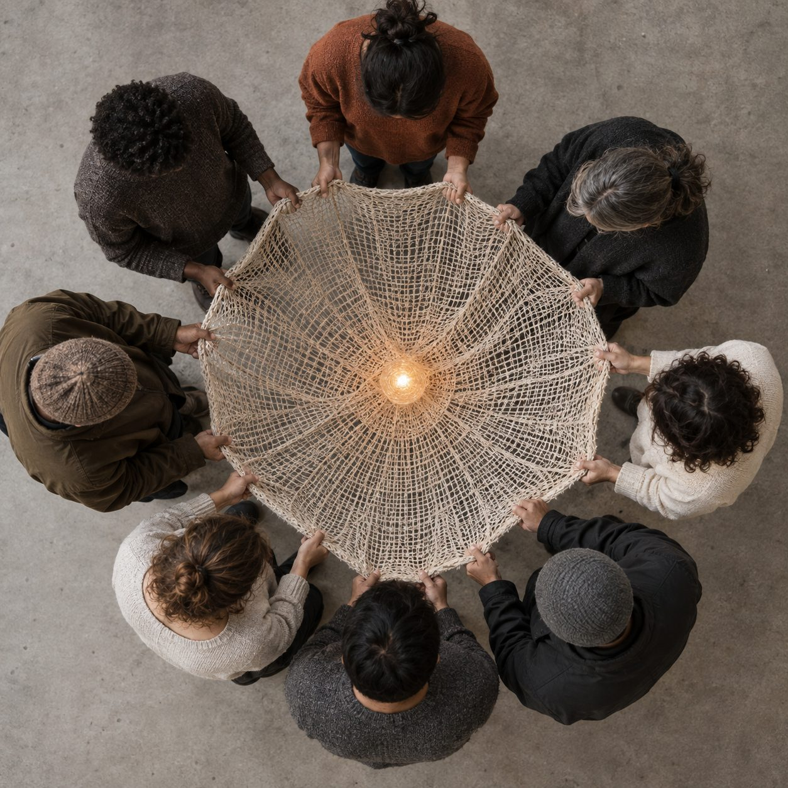

Imagen: generada con Inteligencia Artificial
Hay una frase que repetimos con una facilidad que dice mucho de nuestro tiempo. "No le debes nada a nadie". A veces puede ser una idea necesaria, sobre todo cuando ayuda a poner límites, pero convertida en principio de vida empieza a decir otra cosa. Que depender incomoda, que deber pesa y que ser verdaderamente libre consiste en necesitar cada vez menos a los demás.
Sin embargo, la vida, se parece poco a eso. Llegamos al mundo dependiendo de alguien, aprendemos porque otros nos enseñan y vivimos atravesados, en mayor o menor medida, por redes de cuidado, trabajo, conocimiento e instituciones que ningún individuo podría construir por sí solo. Incluso aquello que solemos llamar mérito propio está atravesado por condiciones y oportunidades que recibimos de otros.
Byung-Chul Han ha escrito sobre una época cada vez más volcada hacia el yo y con menos espacio para encontrarse con el otro. Su diagnóstico encuentra cierto eco en los datos. En 2017, un estudio de Psychological Science analizó más de cinco décadas de datos en 78 países y encontró que los valores y las prácticas individualistas aumentaron en la mayoría de las sociedades estudiadas.
Sería apresurado vincular directamente ese cambio con fenómenos tan complejos como la soledad, pero otra tendencia merece observarse a su lado. Según el World Happiness Report 2025, entre 2006 y 2023 la proporción de adultos jóvenes que decía no tener en quién apoyarse aumentó 39% a nivel mundial, hasta alcanzar a casi uno de cada cinco.
Las cifras describen fenómenos distintos y no prueban causalidad, pero juntas obligan a mirar más allá de lo individual. Si una sociedad depende de vínculos para sostenerse, importa qué ocurre cuando crece el individualismo y más personas sienten que no tienen a quién recurrir.
Desde los estudios de paz, esa tensión importa. Johan Galtung vinculó la paz positiva con la integración de la sociedad humana y John Paul Lederach colocó las relaciones en el centro de la construcción de paz. Ambos parten de una intuición difícil de reconciliar con el ideal de no deberle nada a nadie. Construir paz exige reconocer que nuestras vidas están entrelazadas y que esa interdependencia genera responsabilidades.
Quizá por eso conviene desconfiar de una idea de libertad que reduce lo que creemos debernos unos a otros. Cuidar, reparar, escuchar, participar o permanecer en una conversación sostienen la vida común y una convivencia más pacífica.
Tal vez no le debemos todo a cualquiera. Pero tampoco parece cierto que no le debemos nada a nadie. Buena parte de lo que somos existe porque alguien decidió que lo que nos pasaba importaba.
CIPMEX · Centro de Investigación para la Paz México, A.C. · Paz que se piensa, paz que se construye